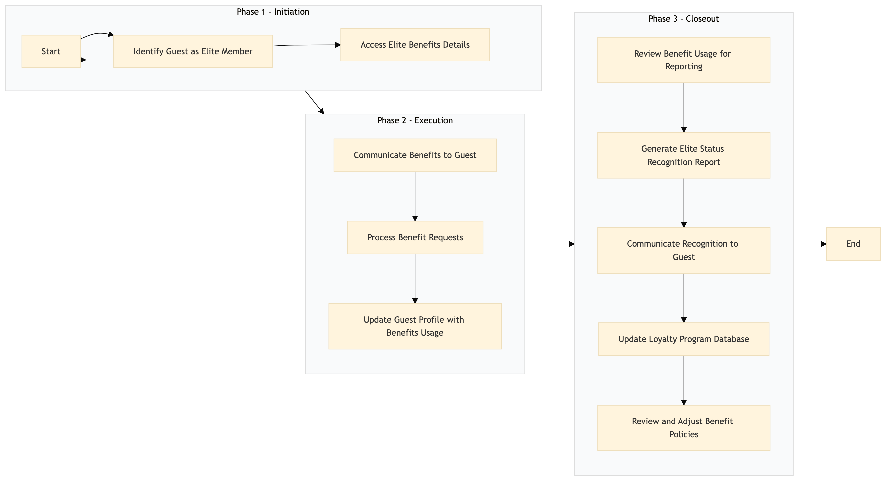

| Role | Steps |
|---|---|
| Front Desk Agent | 1.1 2.1 3.3 |
| Revenue Manager | 1.2 2.2 3.1 3.4 |
| Concierge | 2.2 3.3 |
| Marketing Analyst | 3.2 |
| Loyalty Manager | 3.4 3.5 |
| Step | Name | Role | System | Input | Output | KPI | Dec? | Exc? | Pain Point / Risk |
|---|---|---|---|---|---|---|---|---|---|
| 1.1 | Identify Guest as Elite Member | Front Desk Agent | Oracle OPERA Cloud | Guest check-in data | Elite Status confirmation | less than 30 seconds | N | Y | Incorrectly identifying Elite members |
| 1.2 | Access Elite Benefits Details | Revenue Manager | Oracle OPERA Cloud, Marriott Bonvoy CRM | Elite Status confirmation | Benefits details | less than 1 minute | N | Y | Delayed access to benefits information |
| 2.1 | Communicate Benefits to Guest | Front Desk Agent | Oracle OPERA Cloud, Book4Time | Benefits details | Guest communication log | less than 2 minutes | N | Y | Poor guest communication |
| 2.2 | Process Benefit Requests | Revenue Manager, Concierge | Oracle OPERA Cloud, SynXis CRS | Guest requests for benefits | Benefit request confirmation | less than 5 minutes per request | Y | Y | Inefficient benefit processing |
| 2.3 | Update Guest Profile with Benefits Usage | Revenue Manager, Concierge | Oracle OPERA Cloud, Marriott Bonvoy CRM | Benefit request confirmation | Updated guest profile | less than 1 minute per update | N | Y | Profile updates not reflecting benefit usage |
| 3.1 | Review Benefit Usage for Reporting | Revenue Manager, Marketing Analyst | Oracle OPERA Cloud, Microsoft Power BI | Guest profile updates | Benefit usage report | less than 10 minutes per day | N | Y | Inaccurate reporting of benefit usage |
| 3.2 | Generate Elite Status Recognition Report | Marketing Analyst, Loyalty Manager | Oracle OPERA Cloud, Microsoft Power BI | Benefit usage report | Elite Status recognition report | less than 15 minutes per day | N | Y | Delayed reporting of Elite Status recognition |
| 3.3 | Communicate Recognition to Guest | Front Desk Agent, Concierge | Oracle OPERA Cloud, Book4Time | Elite Status recognition report | Guest communication log | less than 2 minutes per guest | N | Y | Poor follow-up on Elite Status recognition |
| 3.4 | Update Loyalty Program Database | Loyalty Manager, Revenue Manager | Oracle OPERA Cloud, Marriott Bonvoy CRM | Guest communication log | Updated loyalty program database | less than 1 minute per update | N | Y | Outdated loyalty program data |
| 3.5 | Review and Adjust Benefit Policies | Revenue Manager, Loyalty Manager | Oracle OPERA Cloud, Marriott Bonvoy CRM | Elite Status recognition report | Updated benefit policies | less than 1 hour per review | Y | Y | Inflexible benefit policies |
A process to recognize and provide benefits to Elite Status members at a Marriott full-service hotel using Oracle OPERA Cloud PMS and other Marriott systems.